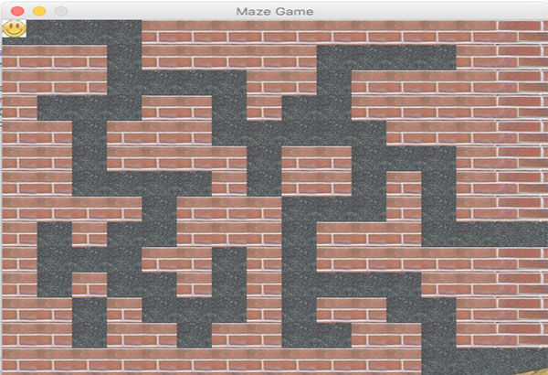
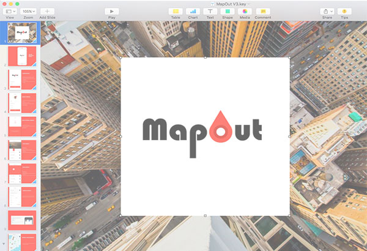
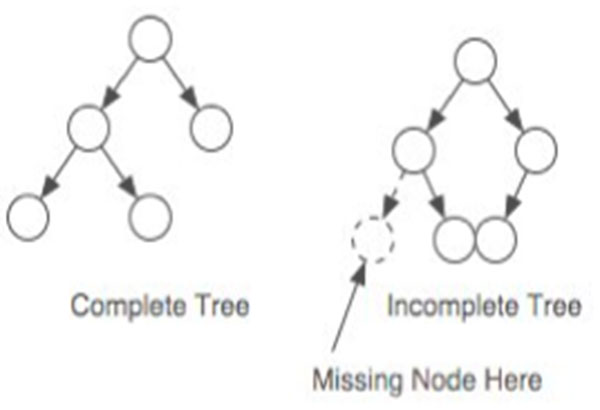
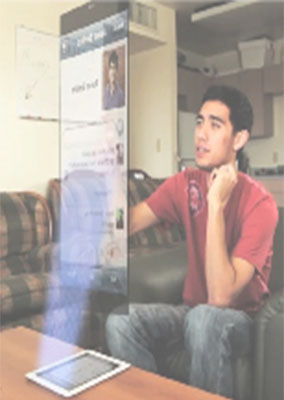
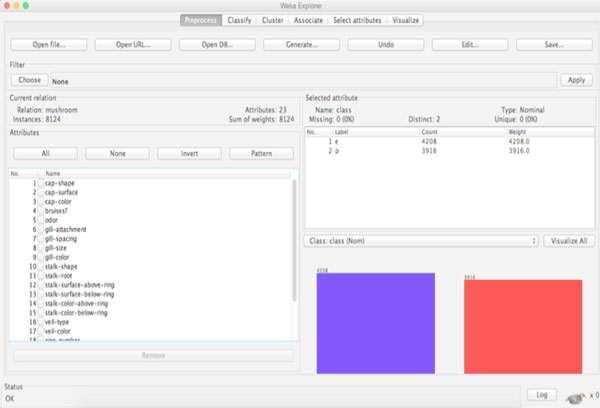

Designed and developed responsive websites using HTML5, CSS3, JavaScript, jQuery, SASS.

Designed and developed a client side of a Maze Runner game using Java and Eclipse IDE.

Worked on an Ionic applicaion at Pace University, which helps in planning your day explicitly.

Worked on an issue of Instability in a Priority Queue, where static version applies to the concept of memoization, while the Dynamic version utilized the linked list within a binary search tree to achieve results.

Worked on a Holographic concept to help students learn through a better online education system.

Worked on a Mushroom Dataset, the intention was to compare 3 classifiers to know their advantages and disadvantages. In this the data was used from the UCI Machine Learning Repository.